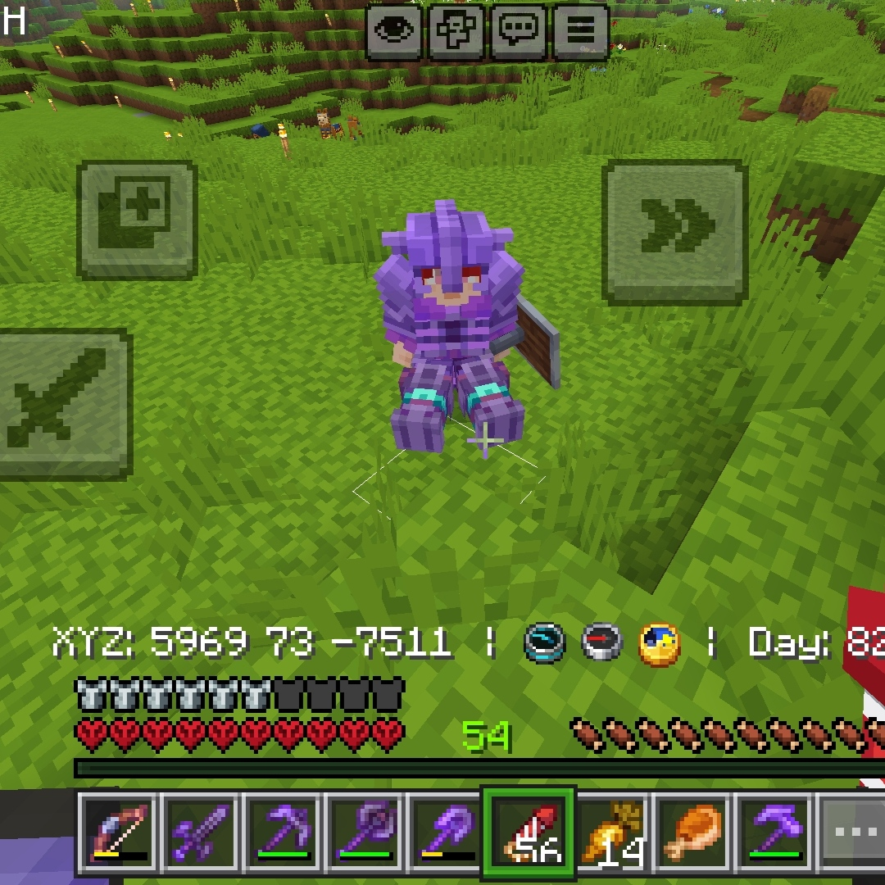
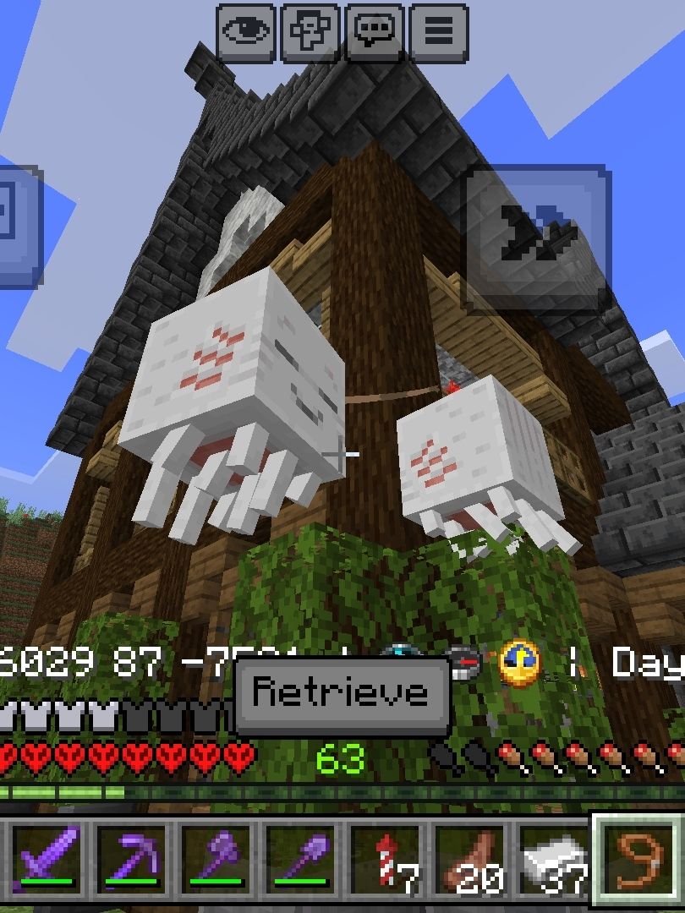

Before you continue…
I just want to say thank you for these past 4 months.
Not just for being with me… but for playing with me, staying with me, and choosing to spend your time with me.

From the games we played together…
the wins, the losses, the funny moments, the late nights…
Every match wasn’t just a game to me anymore.
It became time I got to spend with you.

Even when we lose…
it still feels fun because I’m playing with you.
You made even losing feel like a good memory.
Thank you for your effort.
For staying even when you’re tired.
For playing even when you’re busy.
For understanding me even when I’m not at my best.
I know it’s not always easy…
but you still chose to be there.
And I really appreciate that more than you know.
I notice your sacrifices.
The time you gave.
The patience you showed.
The effort you made just to stay with me and play with me.
Maybe I don’t always say it perfectly…
but I’m really grateful for you.
These 4 months weren’t just time passing.
They were moments I actually enjoyed because you were there.
I hope we get more games, more laughs, more memories…
and more time together.
Thank you for everything ❤️